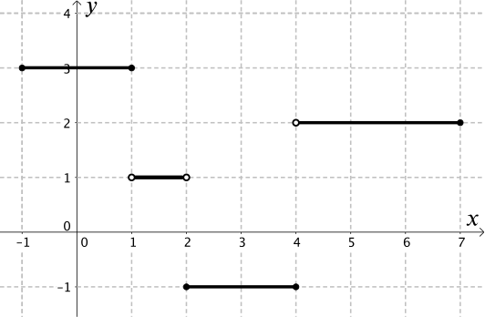
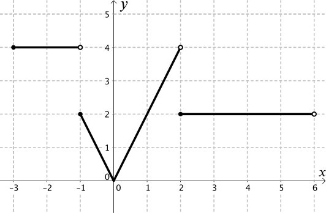
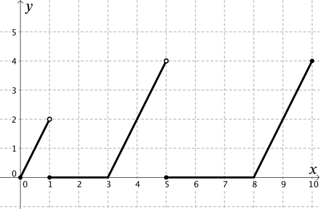
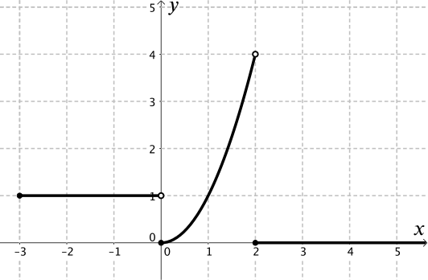
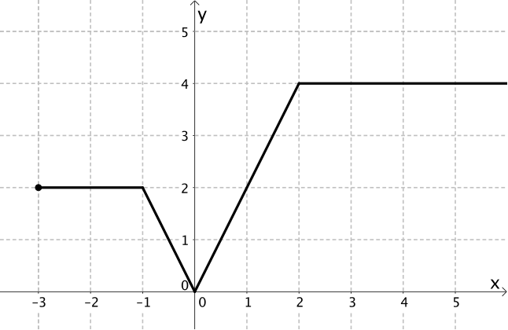
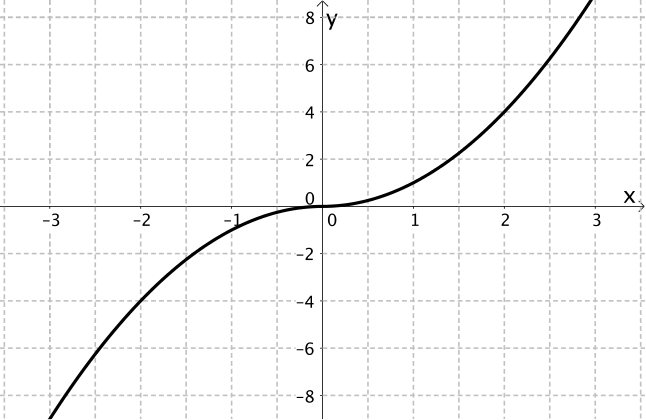

Now we have described the graphs in words, we want to see if we can describe the graphs using mathematical notation. How can we write the equations of these graphs?
You may wish to use the equation cards to help you. Try to match the graphs to their equations. You may find that you need to draw some extra graphs, and write some more equations to complete the set.
Graph 1

Each section of the function is made up of equations in the form y=a.
The open and closed circles should have reminded us of representing inequalities on a number line.
The equation of this graph was not given by any of the cards.
Notice that this function given for this graph is only defined for x between −1 and 7, so the domain of the function is −1≤x≤7. You can work more with domains of functions in Domain and Range dominoes.
You may have noticed that
f(x)=31−12if x≤1if 1<x<2if 2≤x≤4if 4<x≤7
was similar, but required a different graph to be drawn.
What is the difference between the two graphs? What is the domain of this function?
Graph 2

The middle section of the graph might have reminded us of a modulus function, as it could be part of the graph of y=|2x|.
But the modulus (or absolute value) function is a piecewise function itself, and can be written,
f(x)={−2x2xif x<0if x≥0.
Two of the equations given in the cards are correct for this graph.
By convention we include x=0 in the right-hand part of the absolute value function, as shown in the first of the equations, but the graphs are the same for both of the functions given above.
Graph 3

Points (3,0) and (8,0) could be part of two different sections. Have we seen this before?
also appears. What is the difference between this equation and the other two? Is this still a function?
Graph 4

Piecewise functions do not have to be linear, so having a quadratic as one of the sections is not a problem. Note that the final section continues as x increases and doesn’t have an end point.
The cards include the equation
f(x)=1x20if −3≤x≤0if 0≤x≤2if x≥2
Why is this not correct? How would you write a correct function for graph 4?
Extra equations
There are two cards left that we haven’t looked at yet. Can you draw the graphs for them? Are they both functions?
This function is similar to a function given for graph 2, but what is different about this function compared to any of the others we have looked at here?

This also has the same property as the function above. There are no jumps between different pieces of the graph.
f(x)={x2−x2if x≥0if x<0

These two graphs are known as continuous piecewise functions, whereas the earlier functions are all discontinuous piecewise functions.